内容要点
今天我们带你一趟一趟的旅程就是把镜头的生存从创造到最终的产品把镜头做出来的一切这是一台复制镜头机复制镜头的复制工具让我给你们看看每次你把镜头放在你的相机上你都会使用一块装备充满了机灵创造人士技术和一点点的复制在这集影片中我们展示了所有的步骤
这一步实际地拆除玻璃固定器却让玻璃固定器的表面更粗糙这是一个用铁面固定器这不是用来制造玻璃固定器而是用铁面固定器来确认玻璃固定器的硬度和确认玻璃固定器我其实很惊讶这种确认玻璃固定器的过程是与技术的工程师一样做的铁面固定器的形状都是同样的就像
变成了强烈的电子连接电子机器的部件很多部件都要组装和插在手上这包括手机塑胶这个黑箱子把电子塑胶的气泡吸收器连接器和电子机器都要通过电子机器和电子机器的范围现在电子机器、房屋和电子机器都准备好了镜头可以组装从这里来,工作人员必须穿上一个蚊子的
因为这是他的第一次用镜头他看到所有镜头都很大所以他没有想过麦克风会更小当他尝试时镜头会变得相似镜头不会有很大的形状所以他没有想过麦克风会变得更小麦克风会变得很大这是我第一次六年前出镜我看到Oom觉得很有趣当然,在过去几年来有很多动作在整个镜
所以不要错过它感谢您的听听和支持现在我们回到节目PCB的主机板进入了波浪这步骤使用一种笔刀来涂塑胶有些奇怪的地方在这么小的笔写上是非常完美的下一个步骤是一个SMT选择和安装的机器就像电子机器一样机器头使用空气吸收器来从贴纸上拿起然后把贴纸放
00:00–15:25今天我们带你一趟一趟的旅程就是把镜头的生存从创造…
今天我们带你一趟一趟的旅程就是把镜头的生存从创造到最终的产品把镜头做出来的一切这是一台复制镜头机复制镜头的复制工具让我给你们看看每次你把镜头放在你的相机上你都会使用一块装备充满了机灵创造人士技术和一点点的复制在这集影片中我们展示了所有的步骤在镜头的制造剪裁剪刀还有镜头的涂鸦跟著镜头的制作过程每一步一步的更为透明我们展示镜头是如何涂鸦还有镜头的塑胶用钻石和钻石涂鸦还有镜头的装备和工具镜头的涂鸦是如何涂鸦还有镜头的涂鸦还有镜头的涂鸦带来丰富的产品如果你是一位摄影师或是一位电影制作者喜欢装备的技术这会非常有趣我们将在这次旅程中享受很多乐趣给你一些深入的知…
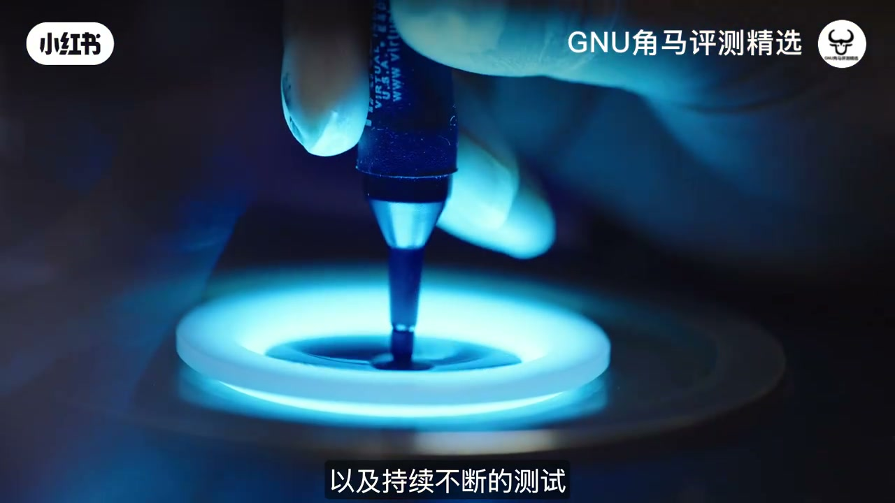
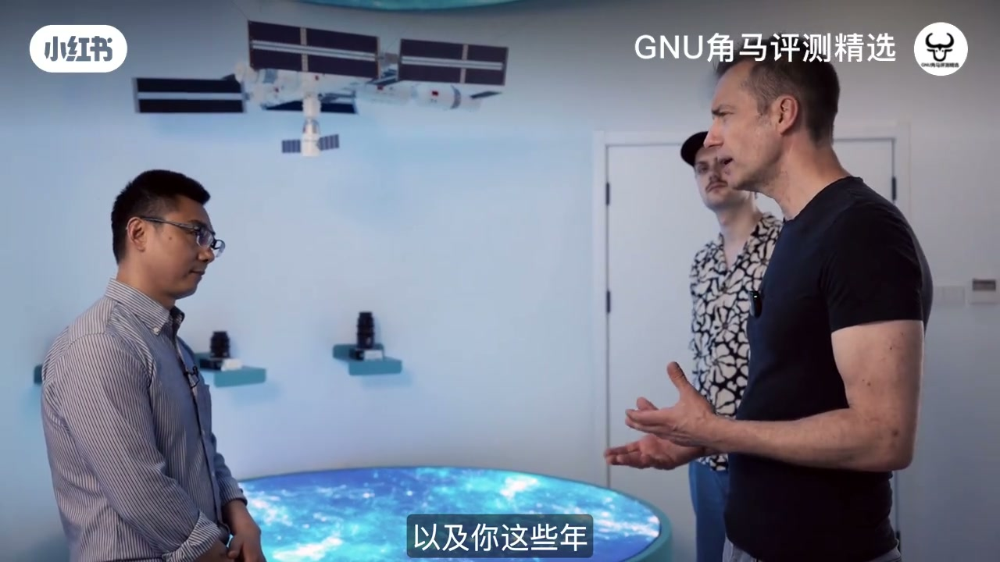
15:25–30:50这一步实际地拆除玻璃固定器却让玻璃固定器的表面更…
这一步实际地拆除玻璃固定器却让玻璃固定器的表面更粗糙这是一个用铁面固定器这不是用来制造玻璃固定器而是用铁面固定器来确认玻璃固定器的硬度和确认玻璃固定器我其实很惊讶这种确认玻璃固定器的过程是与技术的工程师一样做的铁面固定器的形状都是同样的就像镜头上的形状第二步,硬硬的铁面固定器用了柔软的铁面固定器来确认玻璃固定器的表面这些确认玻璃固定器可以提升软度和亮度目标是让玻璃固定器变得半透明准备用来制造接下来的玻璃固定器这里你可以看到我们的硬硬的玻璃固定器在研磨后接下来的过程是铁面固定器铁面固定器通过一种多层次的自动化的过程将玻璃固定器从透明到透明的玻璃固定器…
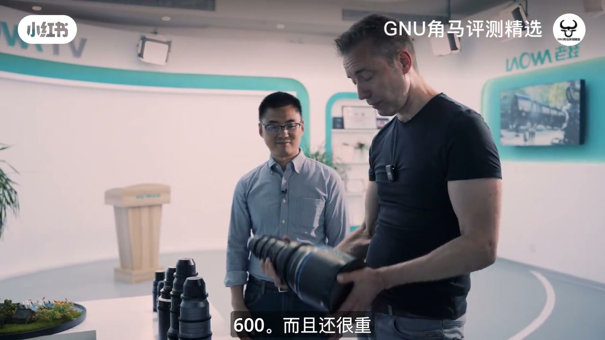
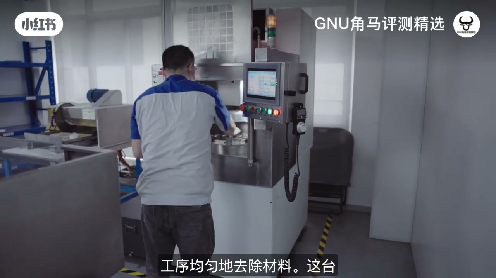
30:50–46:16变成了强烈的电子连接电子机器的部件很多部件都要组…
变成了强烈的电子连接电子机器的部件很多部件都要组装和插在手上这包括手机塑胶这个黑箱子把电子塑胶的气泡吸收器连接器和电子机器都要通过电子机器和电子机器的范围现在电子机器、房屋和电子机器都准备好了镜头可以组装从这里来,工作人员必须穿上一个蚊子的衣服因为组装在洗手间里有很明显的原因我们绝对不可能所以我自己穿上了蚊子的衣服我自己穿上了蚊子的衣服我自己穿上了蚊子的衣服我自己穿上了蚊子的衣服我自己穿上了蚊子的衣服你从洗手间进入洗手间通过一个气泡机所有进出洗手间的部份都通过自己的气泡机称为通过电子机器这里有很多电子机器分成不同的部份通过电子机器进入组装我们来看看…
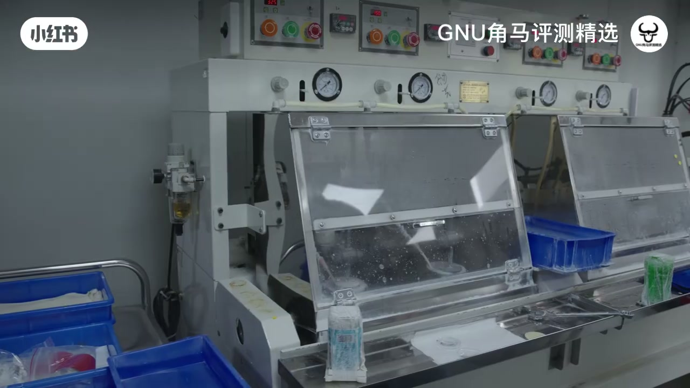
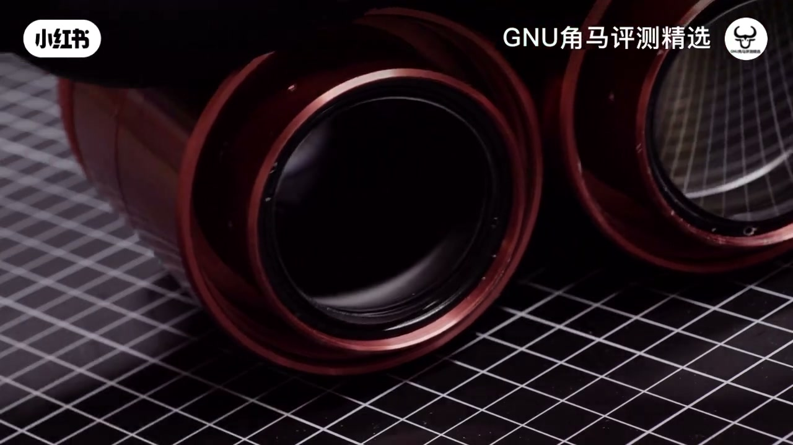
46:16–61:41因为这是他的第一次用镜头他看到所有镜头都很大所以…
因为这是他的第一次用镜头他看到所有镜头都很大所以他没有想过麦克风会更小当他尝试时镜头会变得相似镜头不会有很大的形状所以他没有想过麦克风会变得更小麦克风会变得很大这是我第一次六年前出镜我看到Oom觉得很有趣当然,在过去几年来有很多动作在整个镜头上但现在是Alexa35所以Oom是非常有趣的这是我第一次用镜头感觉很稳定就像Argeneux会花四、五、十倍的价钱蛮不错的其实镜头的范围真的蛮不错的25-100这是第一次用镜头如果Oom不够有一个全镜头的版本有更多的范围25-180已经宣布了但还没售卖这就是范围非常丰富这个价钱是多少?15K1公斤这个4公斤看…
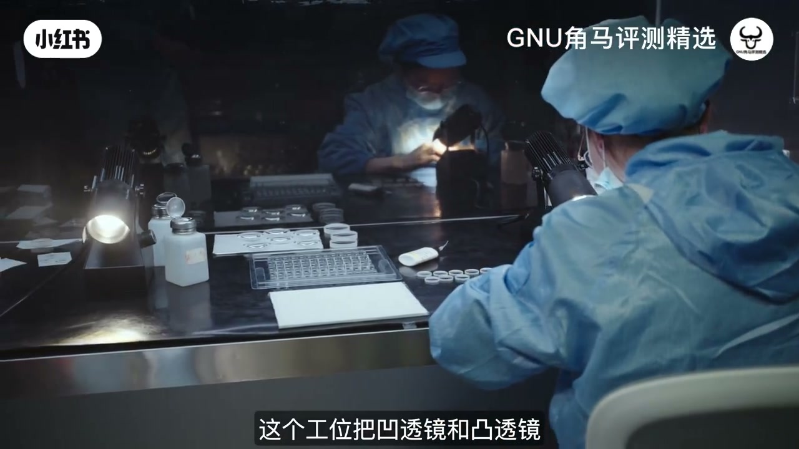
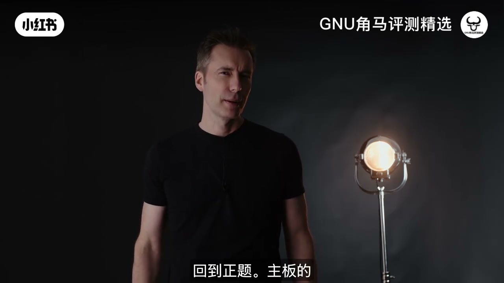
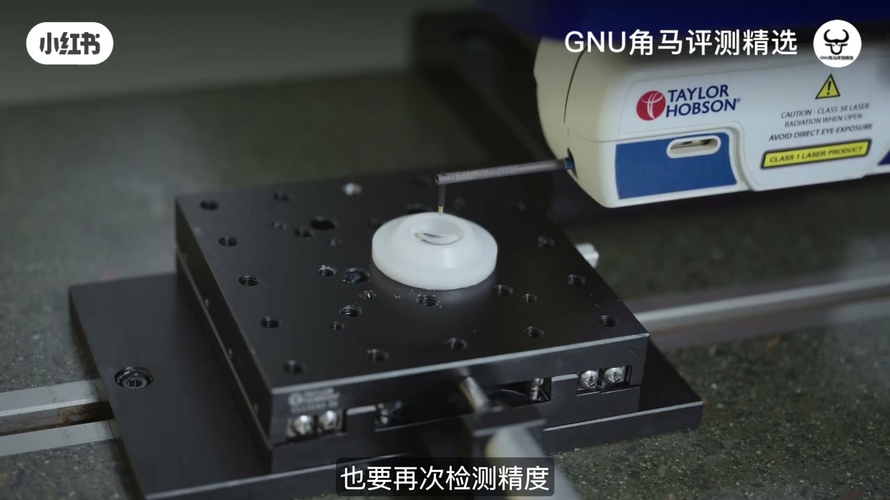
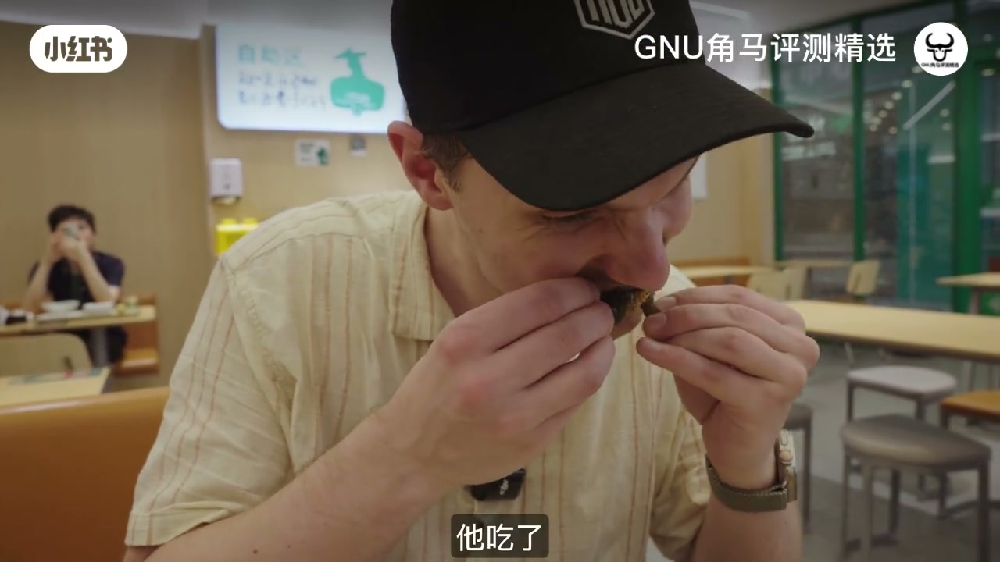
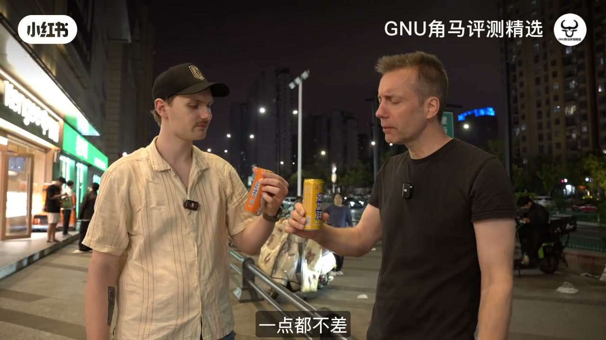
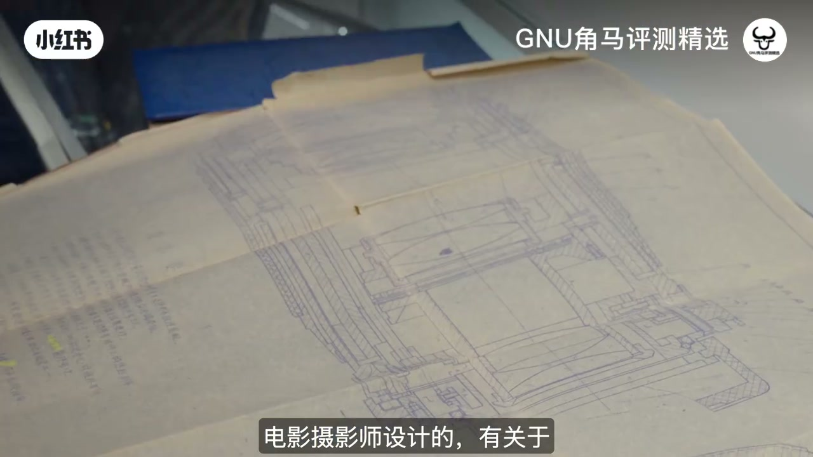
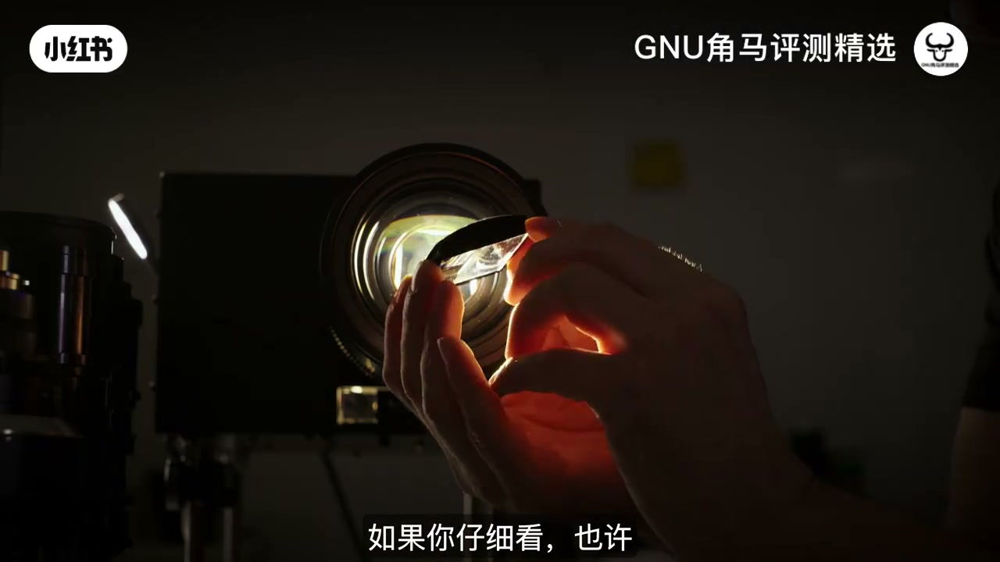
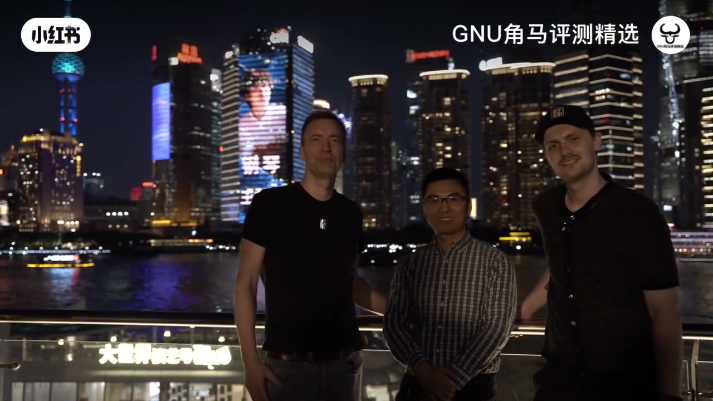
完整转录（1511段）
Whisper medium · 中文 · 已转简体，可能有识别误差。
今天我们带你一趟一趟的旅程
就是把镜头的生存
从创造到最终的产品
把镜头做出来的一切
这是一台复制镜头机
复制镜头的复制工具
让我给你们看看
每次你把镜头放在你的相机上
你都会使用一块装备
充满了机灵
创造人士
技术
和一点点的复制
在这集影片中
我们展示了所有的步骤
在镜头的制造
剪裁
剪刀
还有镜头的涂鸦
跟著镜头的制作过程
每一步一步的更为透明
我们展示镜头是如何涂鸦
还有镜头的塑胶
用钻石和钻石涂鸦
还有镜头的装备和工具
镜头的涂鸦是如何涂鸦
还有镜头的涂鸦
还有镜头的涂鸦
带来丰富的产品
如果你是一位摄影师
或是一位电影制作者
喜欢装备的技术
这会非常有趣
我们将在这次旅程中
享受很多乐趣
给你一些深入的知识
关于中国人的生活
所以跟著我们去中国
体验镜头的生产
我喜欢在电影制作的技术上
创造出来的技术
和镜头有很特别的地方
我心里有些奇妙的东西
所以我非常开心
当Laowa把这条线
交给我们
邀请我们来看
他们在中国制作的产品
特别是Laowa
是一个非常有名的电影制作家
所以我非常开心
当Laowa把这条线
交给我们
邀请我们来看
他们在中国制作的产品
特别是Laowa
是非常有名的镜头
特别有趣的
视频和电影制作
如果你有参与这个频道
你会看见很多Laowa的镜头
在过去的年代
超广角镜头
很多形状和形状的测试镜头
有多种镜头
甚至是麦克风镜头
Laowa有很大的影响
于产品视频
它是非常有名的
在创作全面镜头的特殊镜头
并没有之前存在过的镜头
或者在制作特殊镜头
有足够的费用
以达到经常的电影制作家
的达到目的地
Laowa在中国有两个
制作制作的产品
最主要的在Hilfe
还有另外一个
在上海的小小的产品
制作镜头和镜头的测试镜头
我们去过两个产品
花了一星期
在制作制作的每个步骤
都在制作制作制作
从一开始的构思
到设计和制作
当然我们会把所有
精致的细节
包括镜头和镜头的涂鸦
涂鸦、摄录、机械等等
这实在是一个很好的经验
我们很期待
带你一起来
看看我们所学到的东西
你可能会以为
镜头的发展
是由千万人做的
但实际上
是由一群人
所创造的所有东西
所以我们乘飞机
飞到中国的河斐
来遇见人在窗户后的男人
大翔李是LaOA的创始人
以及每个镜头的思想
他也在日本制造了
不少欧洲制作镜头
也有很多日本品牌的镜头
真正的眼睛设计的巨大巨大
你好
很高兴认识你
而且是个很好的男人
他会带我们到处走走
给我们一些资讯
关于LaOA的工业
以及它们的发展
如果天空是最高的限制
李先生已经在那里了
他的眼睛设计
让它们变成了空间
这是中国的空间镜头
我们有三个镜头
正在进行运作
每个三个镜头
都有一个特定的作用和目的
白镜头是用来拍摄
空间内的空间
以及整个地球的镜头
的画面
其余的两颗镜头
主要是用来拍摄
照片
拍摄天空的日常生活和工作
手机镜头
拍摄细节的实验
包括小物体的近镜
在实验中
但它也用来拍摄
更多细节的镜头
在地球的镜头内
我们很骄傲
这三颗镜头是
在地球的空间内的唯一中国镜头
它们是电影中心
唯一的一种镜头
在这三颗镜头的历史上
你和这家公司
在过去的一年里做过的事
你从哪里来的
你从哪里来的
我毕业之后
我在中国工作了三到五年
后来我开始有机会
在日本工作了一家大公司
我参与了数个大型国际品牌的
杂志设计
当那些品牌
由于投资投资的影响
他们是很危险的
所以不断在实验
更多的杂志设计
但那些是我想要发展的镜头
为了让它们活著
我必须要离开
那些大型公司和团队
我必须要开始自己的生意
这就是我计划的理念
现在已经超过一年
我已经开始创立了Lauwa
这是我从Lauwa开始
开始发展的镜头
这些是拍摄镜头
那些是电影镜头
在过去的一年
我拍摄了很多这些镜头
特别是电影镜头
在所有的影片中
这张镜头
至少对我来说
这张镜头是把Lauwa放在地图上
我之前没有知道Lauwa
我是电影创作者
不是摄影师
这张镜头是很特别的
因为
前面的镜头是有测试镜头
但它们很巨大和重
这让它们很方便
让你能够拍摄
一般的街头人
甚至是专业人士
像我跟Marmalade
我们拍摄很多
动态控制机
我们会拍摄镜头
在房间的速度
如果镜头太轻和复杂
它们有很大的优点
至少它们不断崩溃
然后它们能够放在地图上
所以谢谢你
谢谢
所以
这次的影片叫做
《镜头的诞生》
你对镜头的启发
从何而来呢
从何而来呢
我的启发
我的启发主要是从
在用户之间的深入讨论
我会跟摄影师在网路上
找出他们需要的东西
然后我会用我的技术和技术
去做出启发
当我发展了一个解决方案
它会带来各种特别的镜头
这些是我们正在发布的
新的镜头
我们有很多特别的镜头
用于不同的应用
例如传播
镜头拍摄
镜头拍摄
还有麦克风
这些都是超广角镜头
原来的麦克风
不能维持焦点
当镜头的焦点变化
它需要重新焦点
新的超广角镜头
我发展的方向焦点
当焦点变化后
镜头的焦点仍然在焦点上
镜头的设计非常新潮
是一种创新的设计
这很有趣
因为我们刚才发布了
这类镜头的特定镜头的
电影版本的测试
还有其他东西
像是遮盖麦克风和麦克风之间
这点很有趣
让我们看看
这是个大男孩
25-600mm
也很重
这是超广角镜头的超广角镜头
超广角镜头
25-600mm的镜头广角镜头
很厉害
还有
这是什么
这是一个3D镜头
它可以镜头镜头
和一个镜头上的两个镜头
这些镜头可以用作
一个普通的镜头
很有趣
噢,是普通镜头
旧朋友,对吧
这是普通镜头的全片版
普通镜头系列
新的特点是
可调校的镜头
电影师可以选择
镜头的镜头是怎样的镜头
这很酷
除了这些镜头
我们现在看到的
还有更新的
未来会有什么
可以告诉我们
我们还没看到的镜头吗
您可以猜猜
我们有很多很多的镜头在发展
但我们不能在这点上太多了
再问一个问题
如果没有市场限制
如果没有钱的问题
你会喜欢去创造
像是你的 Mount Everest
你会建立什么镜头
我会喜欢去发展
超广角镜头
超广角镜头
可以把麦克风和麦克风
说是50x或者100x的麦克风
你可以用广角镜头
然后再把镜头放进去
慢慢地把麦克风和麦克风
放进去
例如
你可以在半身镜头拍摄
然后慢慢地放进去
你就可以拍摄
脸部和鼻子的细节
哇
如果你可以建立的话
我会买
以这个背景和样貌
我们要从哪里开始
拍摄镜头的旅程
当李先生提出了
和镜头的 optical design 设计
Batton 和 R&D 组合
我们就要开始了
李先生的研究和发展组合
把李先生的 optical design 设计
转移到一个正常的镜头
除了Optics
这也包括了mechanics
iris
Celvomotors
Electronics
所有的产品
都会成为一个Prototype
在Cat 软件中
通常都会发生的工作
工程师和设计师
也会建立自己的部件
来组合Prototype 镜头
来测试如果mechanics
和Electronics 作用是否正常
这也包括了
灯光烧焦
和接驳电线
你肯定需要很稳定的手段
来做这个工作
R&D 组合的成果
是一个完全正常的Prototype
可以在不同的工作状况下
测试和测试它的照片质素
像这条长片显示
有很高的精准度
和非常高的精准度
来保留镜头的元素
在镜头的窗户中
需要很精准的照片
另外
这些是Prototype 2X
Anamorphic Cine Lens
新的Full Frame Version
这是一个组合的
创作镜头
来给你一个理解
它的尺寸
和它的元素
来比较
这些是Prototype 2
这两个组合
可以可以在不同的情况下
去做很大的钢线
在没有的地方
像是这个镜头
可以可以在不同的地方
做更大的钢线
这就是Prototype 2X
这个组合
可以可以在不同的情况下
去做更大的钢线
在没有的地方
像是Prototype 2X
可以可以在不同的地方
做更大的钢线
在没有的地方
可以可以在不同的地方
如果我们能够在这里展示我们能够在这里展示的内容和内容
我们就不会害怕Copycats
在这楼梯中,我们可以看到
Mr.Lee在节目室里展示的巨大200-800mm 广角镜头
我们现在要去探索制作的制作过程
制作广角镜头的制作是包括切割、砍割、磨砍和磨砍
因此,这可以令它变得有点混乱
并且这阶段不需要清洁空间
这制作自身的磨砍开始
一块玻璃
这块玻璃含有磨砍器
为了改变玻璃的某些玻璃的磨砍器的
可以呈现其中两个表面
一个是磨砍器
那个是磨砍器
另一个的是磨砍器
在用的对比者
需要拔出 infection
clarify一下
我们现在采取了 unity mate
把物件均匀地拆除
这架机把玻璃固定在玻璃固定的玻璃面板上
为了用在玻璃镜头上,这种固定的工具都可以使用
玻璃固定器可以把这些已经切成的尺寸和厚度
这种固定器看起来很优秀,但其实不是
所有位置都可以按照之前所示的方式
直接通过供应器
这种工具叫做弧形固定器
它把玻璃固定器迅速地拆除玻璃固定器
这种固定器把某些弧形固定器
固定器或固定器
用来制造尺寸的目标
这种固定器的基本范围就在这里
后来的工具就被用于玻璃固定器
在洗面后,玻璃固定器再次进行两个步骤
第一步骤,硬硬的骤
用了硬的铁面固定器
来控制玻璃固定器的厚度和玻璃固定器
因此,玻璃固定器就变成了固定形固定器
这一步实际地拆除玻璃固定器
却让玻璃固定器的表面更粗糙
这是一个用铁面固定器
这不是用来制造玻璃固定器
而是用铁面固定器来确认玻璃固定器的硬度和确认玻璃固定器
我其实很惊讶
这种确认玻璃固定器的过程
是与技术的工程师一样做的
铁面固定器的形状都是同样的
就像镜头上的形状
第二步,硬硬的铁面固定器
用了柔软的铁面固定器
来确认玻璃固定器的表面
这些确认玻璃固定器
可以提升软度和亮度
目标是让玻璃固定器变得半透明
准备用来制造接下来的玻璃固定器
这里你可以看到我们的硬硬的玻璃固定器
在研磨后
接下来的过程是铁面固定器
铁面固定器通过
一种多层次的自动化的过程
将玻璃固定器从透明到透明的玻璃固定器
转移到透明的玻璃固定器
铁面固定器是用来确确地
用来制造多种玻璃固定器的功能
这种过程中的核心
就在确实的细节控制
将复合的玻璃固定器
转移到一系列的
独立、控制、线性的行动
这些都是我们在研究的
最终的成品的
确实和确实地确实的细节
我们使用了六种不同的过程
来制造玻璃固定器的形状
确实和玻璃固定器的形状
这是两个互动的玻璃固定器
在两个互动的玻璃固定器之间的
交界的转移
在刮痕后,一个镜头的
细节和形状就有了这种软化
现在,独立和固定器的镜头
完全配合在一起
以形成一个团体的双重
在它们可以固定在一起
镜头仍然需要一个盘子
所以我们会用一个
在两个互动的玻璃固定器之间的
交界的转移
在两个互动的玻璃固定器之间的
交界的转移
我们将回到两个互动的玻璃固定器之间的
交界的双重的确认
在两个互动的玻璃固定器之间的
交界的转移
传统的刮痕和刮痕
不太有效
因为它们的交界和玻璃固定器
在这种技术上,玻璃固定器
是在转移的温度上温度上温度上
即是在玻璃固定器的温度上
在确定器的温度上
就按照它们的温度上
我们会很高兴能够给你们看看
但是交界的玻璃固定器
同样是对的,同样是对的,
这间技术室有装置装置的玻璃固定器
这间技术室有装置的玻璃固定器
这间是其中一个
但它们比较有效的
我们会给它们做成三组的
我们会给它们做成三组的
确保所有过程中的规定都符合质量
确保所有过程中的规定都符合质量
我们会让它们执行空调
我们会让它们执行空调
这些是叫做Rongy Test
这些是叫做Rongy Test
这些是叫做Rongy Test
如果两个镜头不复正,
玻璃固定器被拒绝
并返回到重新做修复的过程中
确保过程失误被阻挡
并立即执行空调
并立即执行空调
这间技术室确保玻璃固定器的中间构围
这间技术室确保玻璃固定器的中间构围
一张镜头被执行空调
一张镜头被执行空调
一张镜头被执行空调
一张镜头被执行空调
一张镜头被执行空调
这就是玻璃固定器的确保
镜头被清理
并在其他桌子上测试
这部机器测试了玻璃固定器的大小
只要非常高级的确保
可以让镜头完全合适
在设计团体上
当镜头通过玻璃固定器的操作
它将在制作的下一个步骤中
将将在制作的下一个步骤中
将将将将将将将将将将将将将将将将将将将将将将将
将将将将将将将将将将将将
将将将将将将将将将将
将将将将将将将将将将
让我示范一开始
一步 microwaves
如果反射增加,反射增长,照片变得更暗
如果反射增长,照片变得更明亮
一张镜头可以反射8%的光,即每个镜头的颜色
尤其是在复合设计中,有很多镜头的颜色
这意味着有很大的缺点在照相的反射
在这个例子中,用一张测试镜头和一张删除测试镜头
你会看到,这张测试镜头
比一个透明的镜头更像一张镜头
测试镜头在德国第一次发行
军事应用也迅速成功在世界第二次世界大战
例如在蝙蝠枪的镜头上
现代的测试镜头非常有效于抵抗反射
并且让镜头更明亮
同时也提升了反射增长和照片变化
尤其是在电影剧中
测试镜头是用来引导感情的
而这里变成了,咱们说,奥可米斯特的艺术
去制作测试镜头的混合
使用了正确的混合测试镜头的颜色
形状和质感
测试镜头的混合状态
开始在清洁房间取消任何污垢
如果污垢被镜头的测试测试镜头的测试
阻挡在测试镜头上
测试镜头将被放在热力硬盘上
再次测试一次
测试镜头的测试测试测试
测试镜头的测试测试测试
将在测试镜头的测试测试
将在测试镜头的测试测试
将在测试镜头的测试测试
测试 marks
即被测试, 将 Mong
不只在测试 existed
。
面对测试 Exposure
是很重要的
和测试,而且很重要的
测试的最初做的lol
啥美 số
一盒链子是用不同的化学物质进行填满的
这些通常是金属链子,像是铁锤链子
技术员开始进行填满,然后空气从房间出发,创造一种氧气
现在,链子中的第一个化学物质被电子枪热到2500°C,导致氧气上升
氧气上升并把链子放在旋转镜头上
这个过程非常精准,并计算在nm
当第一层链子安装好,剩下的氧气就从机器里出发
接下来的氧气被氧化,让整个填满的过程结束
不同的氧气光亮在不同的颜色和不同的亮度上
实际上是非常漂亮的
当然,我们在最初调整链子的亮度
但并不是因为它不太亮
它实际上是这样的,如您可以看到
这是链子的烧焦过程
我们只是无法做到
因为如果您真的仔细看看
链子太亮了,它可能会破坏您的眼睛
因此我们调整链子
过程结束后,氧气就从机器里出发
让链子的门开了
然后镜头就移到下一阶段
让质量控制处理结果
这里我们看到链子是硬的
这意味着链子的边缘是黑的
当您将链子进入了多元系统时
链子的光亮会成为问题
黑链子的边缘
是一种解决链子的解决方法
这站在链子的边缘上
这站在链子的边缘上
成为了链子和链子
成为了链子和链子
多元系统的链子
像这些链子
是用来调整链子的质量
用来调整链子的质量
例如链子的色彩
链子的链子
用了非常薄的
链子的链子针链
链子在链子中的
准确的位置
是必须的
链子的晃动
用 Host 速度
打系的暗面
clamp
全主平台
equally
更加像这台机器
和构 Ken 到sonA
使用同一个链子
当镜头通过所有的质量控制阶段时,它将被包含并运达成装备部。
但是,在装备前,我们将看看部队制作的房屋和镜头的机器。
这开始于装备前,我们将看看部队制作的房屋和镜头的机器。
这开始于装备前,我们将看看部队制作的房屋和镜头的机器。
这开始于装备前,我们将看看部队制作的房屋和镜头的机器。
这开始于装备前,我们将看看部队制作的房屋和镜头的机器。
这开始于装备前,我们将看看部队制作的房屋和镜头的机器。
当机器通过质量控制时,它们将送给专业公司,
以提升耐性,以及提升镜头的色彩。
当屋内回归于这段过程中,
当机器通过质量控制时,它们将送给专业公司,
以提升耐性,以及提升镜头的色彩。
屋内回归于这段过程中,
当机器通过质量控制时,
它们将送给专业公司,
以提升耐性,以及提升镜头的色彩。
当机器通过质量控制时,
它们将送给专业公司,
以提升耐性,
以提升镜头的色彩。
当机器通过质量控制时,
当机器通过耐性,
以提升耐性,
以提升耐性,
以提升耐性,
以提升耐性,
以提升耐性。
当机器通过 sistemottn
以提升耐性,
以提升耐性。
所以不要错过它
感谢您的听听和支持
现在我们回到节目
PCB的主机板进入了波浪
这步骤使用一种笔刀来涂塑胶
有些奇怪的地方
在这么小的笔写上
是非常完美的
下一个步骤是一个SMT
选择和安装的机器
就像电子机器一样
机器头使用空气吸收器
来从贴纸上拿起
然后把贴纸放到
机器板上的正确位置
波浪机器之后
就放进了循环机器
是一个锅子
在溶解至溶解后
变成了强烈的电子连接
电子机器的部件
很多部件都要组装
和插在手上
这包括手机塑胶
这个黑箱子
把电子塑胶的气泡吸收器
连接器和电子机器
都要通过电子机器
和电子机器的范围
现在电子机器、房屋和电子机器都准备好了
镜头可以组装
从这里来,工作人员必须穿上
一个蚊子的衣服
因为组装在洗手间里
有很明显的原因
我们绝对不可能
所以我自己穿上了蚊子的衣服
我自己穿上了蚊子的衣服
我自己穿上了蚊子的衣服
我自己穿上了蚊子的衣服
我自己穿上了蚊子的衣服
你从洗手间进入洗手间
通过一个气泡机
所有进出洗手间的部份
都通过自己的气泡机
称为通过电子机器
这里有很多电子机器
分成不同的部份
通过电子机器进入组装
我们来看看
电子机器
接驳器的功能是立即测试的
但是连接近镜头的部件
也被再次测试了
镜头部件被再次测试了
为了做得完美
镜头部件被再次测试了
为了做得完美
而这里我们看到了一个陷阱的例子
将会返回镜头部件
当所有组织都结合了
镜头部件就变成了摄像机
这里工作人员可以调整
镜头部件的重量
用螺丝
结果在摄像机上
摄像机可以让测试者
进入镜头部件
并测试镜头的面积
这是一个ultra-macro镜头
和测试器可以测试
如果镜头是硬的
和绝对强烈的
这部机器是一个
镜头部件和测试器
下面的镜头是光线
上面的镜头是一个
镜头部件
这个镜头的照片
是被这九个镜头
通过镜头测试后
给予镜头的精准数据
和测试器的规格
当镜头通过所有测试
镜头被包裹
锁住了
这部机器
给它的新家人
拍摄了一部很棒的电影
我们还没结束
我们将继续在上海
制作镜头和测试器的
厂家工厂
而我们在机车上
之前
是一个很好的时刻
来分享一下
我们的印象
从这次旅行中
这部电视剧
肯定在我们的旅行频道上
如果您不感兴趣
就跳到下一个节目上
但电影制作者
经常要去到
他们的舒适地区
而且
在中国旅行
总是一场冒险的旅行
这次旅行
并没有缺少这些
进入了大陆
中国
甚至孟迦
也无法更加神奇
这家乡
只是充满了变化
尼亚森林
高科技玩具
和历史上的物品
和这样的东西
变成了
一种非常有趣的感觉
我们有一天
要做一些
普通的旅行东西
但别担心
我们不会让您
丢失更多的印象
虽然这次旅行
很开心地
来到城市
像上海的旅游
有大陆人口
大约30万人
这家乡
充满了整个国家
而且非常有活力
这家乡
就像
上海的
生物
和其他东西
菲利菲
非常不一样
而且可能
比中国的
普通生活
更接近
中国的
更小的
但仍然
接近6万万人
上海的旅游
很常见
在上海的
旅游地区
但在比较
工业化的
城市
像赫飞
很不一样
我们离开机场
没见过一只上海旅游
哈喽
哈喽
早安
早安
早安
看来
他也没见过
有些东西
在上海
必须要注意
注意
没有人
在中国说英语
除非
他们来自香港
甚至不在机场
通讯器
在你的手机上
让一切都做得到
而且
没有人用金钱
所有人
都用
WeChat
或阿迪佩
这是饭盒
有没有
见过这样的东西
食物
通常
非常好
但是
它可能
比较热
整个新世界
都在你面前
莫迪
鸡腿
你会尝试吗
你会尝试吗
他做的
太棒了
还有
味道如何
味道不错
味道像鸡吗
味道像鸡
但是
它的质量
比较丰富
想象到
他们走进去的东西
比较惊讶
味道像鸡
比较惊讶
你尝试的
鸡腿如何
你尝试的
在中间
你必须把它分开
这是鸡腿
现在是
鸡腿
像吴迪
对
吴迪
当它鸡腿在你门上
可能是机器人
在你饭菜中
在你饭菜中
可能是机器人
在你饭菜中
可能是机器人
还有鸡腿
这鱼是上海特色
可能是
最好的
宣传
是鱼肉的
鱼肉的
很好吃
很好吃
这个很好吃
这个很好吃
一个最快的方法
在外国
在外国
学习日常生活的
方法
是去超市
去看看
市场
人们在买
和费用
所以就这样吧
如果听到价格
你必须记住
中国的价格
比较低
中国的价格
比较低
中国的价格
比较低
中国的价格
价格
所以道理
在中间
是火鸡
是芒果
是芒果
这个大概是500克
所以这个大概是1美元
1美元50克
现在看看这个
这是一瓶兴趣的啤酒
它是正确的尺寸
我喜欢
1美元1公升
这是
对
大概是2.5美元
大概是2.5美元
我认为
价格比较低
对于
对于欧洲
大概是1.3美元
大概是1.5美元
对于
美国
这里有什么特别的味道吗
其实你知道吗
这是芬塔
芬塔是德国人
我知道
但我们有中国版本
真的吗
味道不一样
我听过
你知道芬塔是哪个国家的吗
哪个国家
那是纳西人
真的吗
其实是一个真实的故事
看看
我不知道
我其实喜欢这个
这是一个很好的超市
非常有趣的东西
在任何地方都找不到
这是什么
我不知道
没有
这太过分了
很多东西看起来太生命了
哦
豆子
哈喽
这不是一个小鱼店
记得吗
这是
这是一只鱼
很美味
我可以告诉你
鱼
我觉得她很可爱
白鱼
我希望那冰淇淋里没有鱼
你永远不知道
你永远不知道
我一定知道
他们认为你们俩很帅
他们认为你们俩很帅
他们告诉我
他们认为你们俩很帅
哦 谢谢
她是她是她是
哦
他们在做柏拉特风格
我们认为他很帅
另一个人不太帅
但是他很帅
让我们尝尝这个
中国芬塔
世界的味道
干杯
干杯
不错
但是它不像芬塔
你想尝一下吗
好
我觉得我的味道像芬塔
味道像你
这个味道像芬塔
所以这个是纳粹芬塔
好
华尔台
帅 lady
我认为这是部分的航空台
但是她真的 unleash
地铁
地铁
她是中心的地铁
她是中心的地铁
填丛
那谢谢你
我们现在要好好到上海
那��要等到 Yongni呀
有是啊
车呢
tick
为什么
但还是这种
我们才能坐上飞行艇
不,要两小时半才能到上海
看看这个
这是飞行艇的充电器
坐在飞行艇的等候室
用不同的电源
用不同的电话号码
欧洲、美国
你的飞行艇可以这样做吗
这背后的商业模式
是你需要扫描一个号码
然后你需要跟一个像YouTube一样的
Billy Billy的朋友描述
他得到一个追踪者
并付出了你的充电费
想像一下
这是一个新的YouTube模式
我觉得这很棒
我不知道这是谁
但谢谢充电费
当飞行艇到船上
飞行艇速度很快
飞行艇会在那里停下来
你还会看到动作漏洞
因为它是建筑的
让我们看看
我们坐在飞行艇
我们在240公里的空间
李先生给了我们
这个很棒的镜头
10毫米的Dreamer
是一个广角镜头
首先
他们给了你一个E-Mount
还有L-Mount
这是非常有意义的
因为我要确保这里是…
自动的焦点
还有手动的焦点
手动的焦点,这很完美
当我们坐在飞行艇上
我们在240公里的空间
我们要做一个更快的镜头拍摄
来吧
我拿到了
我以为那是真的
我们要做一个更快的镜头拍摄
对,我们现在要做甚么
我们现在要做甚么
你看起来很小
而且世界很大
Morty
Morty,你太远了
别把我丢在后面
别丢在后面
ötter
我们在深夜 expect after a good night's sleep
我们转到上海 müsste加强公车
这个机车车头 rotating rod
它上了飞机箱
这点会让我们看到
羽毛和其他行为
那机车真的可以遥控著飞机
任何发生射击
看看,哪里有很多 mode
发展比较快
Jordyland
警察会目睹
会 İyi ti
The showroom is also very different,taste,it is reallydesign for cinematographers with
stories about lenses andhow they are used.
And of course you can testlenses right hereThats
他用的是Oom,看起来像是Oom
Oom,对,很不一样
原来这个镜头很大
所以我们没有空调
因为这是他的第一次用镜头
他看到所有镜头都很大
所以他没有想过
麦克风会更小
当他尝试时
镜头会变得相似
镜头不会有很大的形状
所以他没有想过
麦克风会变得更小
麦克风会变得很大
这是我第一次
六年前出镜
我看到Oom
觉得很有趣
当然,在过去几年来
有很多动作
在整个镜头上
但现在是Alexa35
所以Oom是非常有趣的
这是我第一次用镜头
感觉很稳定
就像Argeneux
会花四、五、十倍的价钱
蛮不错的
其实
镜头的范围
真的蛮不错的
25-100
这是第一次用镜头
如果Oom不够
有一个全镜头的版本
有更多的范围
25-180
已经宣布了
但还没售卖
这就是范围
非常丰富
这个价钱是多少?
15K
1公斤
这个4公斤
看看这个妖怪
这不是标志
是一个 prototype
我们不能给你们看
这个镜头的范围
所以别看了
但它是非常长的
有两倍的范围
像你之前所见
其实
F4.5
很快
用这个巨大的
镜头
这是我称之为
入口镜头
可以放在镜头上吗?
对
镜头的支援是KIVA
可以放在这里
可以
应该可以
我再试一次
很难
保持住
我认为
我们可以做到反转
很不错
耶稣基督
这就是Zoom
里面有干净的房间
像我所说
镜头的镜头
特别是机械镜头
和测试镜头都在这里
镜头的过程相似
不同的是
设计理念
设计标准
和质素控制的过程
Zoom的镜头
有一个镜头的设计
保持著整个镜头的焦点
没有重新焦点
镜头的中心位置
在焦点中维持住
避免变动
另外
镜头的镜头群
这增加了它们的尺寸和重量
当然
也增加了它们的呼吸效果
即是镜头的尺寸
在调整焦点时
不会突出
因为这些设计
质素控制需要三个测试
为了拍摄机械镜头
更多的测试
为了特定的镜头特征
例如镜头的焦点
这让镜头更加昂贵
即使它们缺乏自拍镜头的
摄影机和电脑
房屋和机械镜头
其实比镜头的镜头
更加昂贵
测试镜头的组合过程
已经被改善了
从传统的镜头
采用的方式
测试镜头
分成了
独立的调整镜头
测试镜头的特定的镜头
可以转向
为了改善镜头的方向
镜头的间隔
可以正确地调整
如果一个特定的镜头
出现错误
只有那一个特定的镜头
需要改善
而不是整个组合
可能你会注意到
在一些镜头的背景镜头
我们使用了A-Cam的
Ranger Zoom
A-Cam的自己的Genesis
Cosmic
我必须说
Ranger做了一个很棒的工作
在这部剧集中
提供了很好的范围
速度和靠近的焦点
还剩下相当的小巧
为了介绍
我们拍摄了整个Ranger Zoom的组合
李先生在上海花了很多时间
去做他的镜头设计
讨论非常有趣
很可怜的
我不会说曼德里
我会很高兴
当你的飞机在墙上
但镜头的细节
好像很重要
说到镜头和细节
总是有一些
敏锐的东西
也很受欢迎
去改善镜头的细节
这就是我们在这部剧集中
提供了很好的镜头设计
在上海花了很多时间
提供了很好的镜头设计
也很受欢迎
去改善镜头的细节
总是很重要
在上海花了很多时间
提供了很好的镜头设计
也很重要
在上海花了很多时间
提供了很好的镜头设计
也很重要
在上海花了很多时间
我在这里在Laowa的
安纳摩克镜头设计的
设计室
像是Prodius Prime
这是新的全新安纳摩克镜头
这是新的全新安纳摩克镜头
刚刚在Sinegear公开
它看起来
和S35的镜头
完全是相同的
和S35的镜头
完全是相同的
而且它有一个很酷的新功能
你可以改变
这个镜头的镜头短度
你可以改变
这个镜头的镜头短度
你也可以调整它
在飞机上
所以它适合每一刻的设计
所以它适合每一刻的设计
现在我们有了
很棒的机会
来看看里面的
安纳摩克镜头
和它们合作
来创造安纳摩克的魔法
什么元素
我们现在就来看看
在R&D部分
我已经说过
这不是Diopter的设计
这是一个新的方法
这是一个新的方法
这是一个新的方法
它是在安纳摩克镜头的前方
它是在安纳摩克镜头的前方
这让安纳摩克镜头
变得比较小
这让产品变得更便宜
也让镜头变得更光亮
也让镜头变得更光亮
我们要知道的是
安纳摩克镜头的部分
和安纳摩克镜头的镜头不同
因为它们必须
非常非常准确地
调整到对方
非常非常准确地
尽管安纳摩克镜头
只能够
在所有的镜头中
中立
它们必须
非常准确地
中立
它们必须
非常非常准确地
中立
所以我们有四个
安纳摩克镜头的
分别
像是Podeus Prime
甚至五个
如果我们计算
最大部分的镜头
已经是双镜头
如果我们仔细看
我们可能会看到
这两种镜头
放在一块镜头上
这是第一种
双镜镜头的
组合
你可能
会看到
这两种镜头
这两种镜头
是为了做调整的
因为你无法
把镜头这样
做得很准确
所以你只能
把镜头放进去
我们只要用一点空间
就能把镜头调整得准确
就能把镜头调整得准确
我现在会给你们看
我现在会给你们看
当然我不会做
只会由PROFOMOLE ALL
来示范
这部份是Podeus Flex
这部份是Podeus Flex
所有的安纳摩克镜头
都可以用来
把镜头变成
不同的色彩
换镜头的部分
都可以由使用者自己做
镜头不需要再重新调整
之后换镜头
镜头改变
是个很重要的技术挑战
这要求是
两种圆形镜头
要求两种圆形镜头
要求两种圆形镜头
要求两种圆形镜头
要求两种圆形镜头
要求两种圆形镜头
要求两种圆形镜头
安纳摩克镜头的移动
可以导致严重的问题
例如复杂的中心
幻影和画面反射
为了解决这个问题
一种很特别的
在镜头上的调整
已经发展过
这是第二组镜头
进入镜头的组合
这是一种
安纳摩克镜头
这是第二组镜头
进入镜头的组合
这是第三组镜头
这是两种安纳摩克镜头
进入镜头的组合
这是两种安纳摩克镜头
进入镜头的组合
这是两种安纳摩克镜头
进入镜头的组合
一张特别的窗户
在镜头镜头镜头的旁边开启
镜头镜头组合
首先用了扭带
让它们可以进行调整
技师们用了
用上特效的手工
轻轻地调整镜头组合的角度
并且观察镜头的影像
当最明显的镜头镜头成功后
镜头镜头的扭带
就用了扭带的扭带
让镜头镜头不断封闭
当镜头镜头走到
镜头的外面
你会开始看到
镜头镜头的闪烁
然后镜头镜头
会变得有点暗暗的
这是一个
很普遍的
很普遍的镜头镜头
而且是一种适合的特性
但当镜头镜头走到
中央的位置
镜头镜头就会
变得很暗暗的
变得很暗暗的
我们把这项计划
在上海的
Rivera的一晚过了
从它们的地面上
我们看到了天空
在阳光下
它是一个非常神奇的地方
对我们来说
它们给了我们一段安静的一刻
我想感谢整个洛杉矶
为我们支持
从前到后的旅行
我想感谢戴永利
让我们拍摄这个纪录
在他的工厂里
并且为他自己成为一部分
为他的技术
并且为他愿意
我也想感谢戴永利
对我们这么诚实
友善和友善
他真的给了我们
中国的医疗
非常特别的感谢
哈巴和琪威
从洛杉矶的香港军队
很难像这样
不得不支持
哈巴是
国际贸易及贸易团队的一员
她是我们的制作人
制作人、编辑
她真的成为中国文化的连结
甚至超越了
如果你有机会跟她合作
你一定会很幸运
谢谢哈巴
琪威是洛杉矶的
国际电影制作人
他为我们提供了技术需要
他为我们提供了技术需要
他为我们提供了技术需要
他为我们提供了技术需要
他为我们提供了技术需要
他为我们提供了技术需要
他为我们提供了技术需要
我们不知道这位是谁
他一直在追踪我们
是在追踪我们
琪威的眼睛是很深的
你们看不到
但他追踪了我们
很多人都在那里
他太厉害了
我不会被他撞倒
他真的太棒了
谢谢琪威
你真的很好
谢谢Morty你加入了这个旅程
这次的旅程是一个很好的经验
经过我们的许多合作
你成为了媒体团队的一部分
别忘了观看他的
精彩的电影频道MortyFilms
他将会发布
一段剪辑
以剪辑你们的D.I.Y.想法
最后我们想要感谢
媒体团队的成员
他们让这种
复杂的制作可以成功
你们的善意和诚意
让我们像我们
创作的影片
让我们感到兴奋
我们非常感谢你们
如果你喜欢我们的影片
请加入媒体团队
并成为自己的成员
我们有很有趣的特点
加入的按钮
就在这影片下方
如果你是一名制作家
或是一名工业英雄
有什么好分享的
跟我们很高兴的
专业电影家的群体
我们的电邮就在下方
我是尼克勒斯
在NerdliciousWishes 下载影片
让我们感到惊喜
谢谢收看